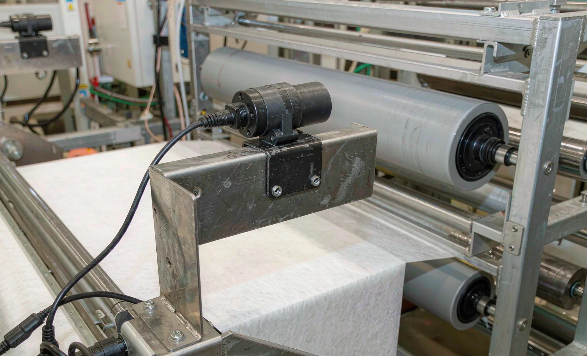
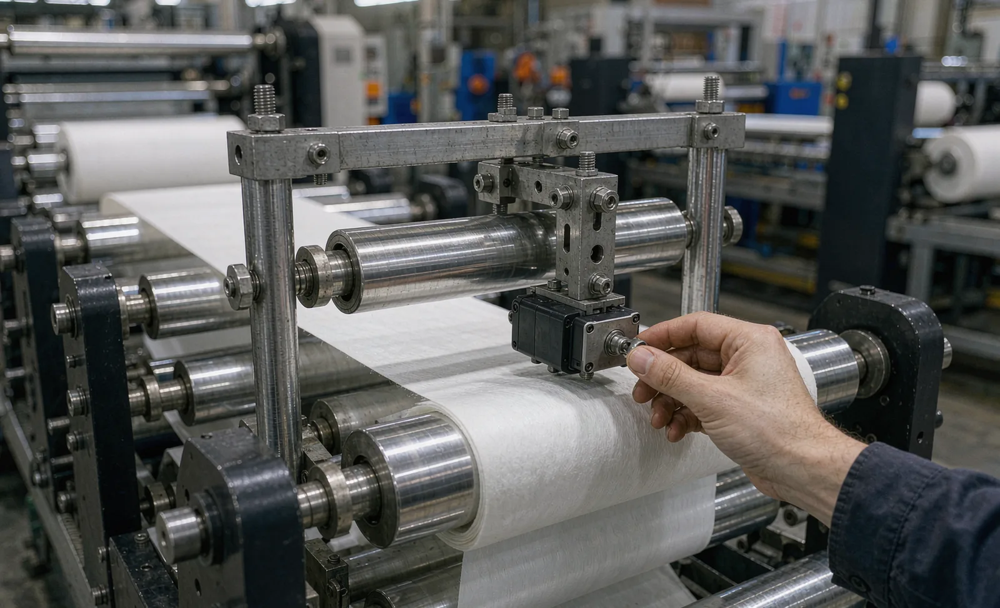

Published September 17, 2026 | By HDPTH Technical Editorial Team

Web wander is one of the quietest profit drains in converting: slit widths drift with the edge, trim grows, and rolls end up ragged or telescoped. Buyers who treat guiding as a line item — “one ultrasonic sensor, one guide frame” — often find after commissioning that the loop cannot hold position on their lightest material at production speed. This guide covers what web alignment consists of, what to contract, and how to verify it before handover.
Why webs wander, and where correction belongs
Lateral movement rarely has a single cause — edge variation and core eccentricity in parent rolls, roller misalignment, bearing wear, speed and tension transitions. Because causes are distributed along the machine, correction is too. A well-specified machine typically uses two correction points:
- Unwind stand position control: an edge sensor measures the parent roll edge and the stand (electric or hydraulic) shifts laterally to keep the web centered downstream. This handles coarse, slow drift from the roll itself.
- Steering guide before the slitting section: a pivot-framed roller section fine-corrects the web path just upstream of the knives, where alignment actually determines slit width.
Between sensor and correction actuator there must be enough free web span for the correction to take effect — this geometry, more than any component brand, decides whether the loop is stable. Ask every vendor to show the guiding geometry drawing for your layout, with entry and exit spans marked.
Sensor selection: match the worst material, not the brochure
The sensor is the loop’s eye, chosen against materials rather than features. Ultrasonic edge sensors measure the web-to-air transition without depending on color or print — the default for translucent nonwovens, films and dusty hygiene lines. Line-scan camera systems read printed lanes and low-contrast edges and can guide multiple lanes independently. Optical infrared sensors cover contrast-based detection at modest cost. Define the lightest, most translucent and dustiest material in your range, and require the vendor to demonstrate stable edge detection on all three at FAT.
Correction hardware and control integration
Correction actuators come in two families. Steering guides rotate a framed roller set about a pivot, steering the web while keeping path length constant — preferred where span geometry allows. Offset-pivot rollers move a roller laterally and suit compact layouts. Both need stiffness, resolution and travel matched to the web: a heavy laminate needs more force than a 15 gsm spunlace. Integration matters as much as mechanics. The guiding controller should live in the machine HMI with recipe-stored setpoints, a live deviation trend, and alarms when correction approaches end of travel — the same data trail buyers expect from tension and web control on modern lines.
| Element | What to specify | Why it matters |
|---|---|---|
| Sensor | Type matched to worst material; dust protection; mounting repeatability | A sensor that loses the edge on translucent or dusty web destabilizes the loop |
| Correction actuator | Steering guide geometry with marked spans; force and travel for your web | Correction without geometry is motion without result |
| Controller | Recipe integration, deviation trend on HMI, end-of-travel alarm, manual/auto centering | Operators must see and trust the loop, not fight it |
| Acceptance | Written test: material, speed, disturbance method, tolerance, measurement point | Turns “±0.2 mm” from a claim into a contractual number |
What accuracy number should go in the contract?
Closed-loop edge guiding on well-built equipment holds lateral position within roughly ±0.1 to ±0.5 mm in typical conditions — but a bare number is meaningless without test conditions. A specification worth writing reads: “on material X at speed Y, after a defined step disturbance, edge deviation settles within Z mm at the slitting section.” The FAT trend display settles the argument, and every guiding claim should be normalized to the same test definition before ranking prices.
Alignment and the rest of the machine
Guiding does not act alone. Knife systems assume the web arrives centered — automatic knife positioning and slit width tolerance budgets both consume the alignment margin — while web break detection and downstream roll quality depend on a centered, flat web. When one offer is cheaper because it deletes a correction point, ask which downstream tolerance absorbs the difference.

Specifying guiding for your materials?
Send HDPTH your material range, widths, speeds and roll specifications. We will propose a guiding and alignment configuration — sensor type, correction geometry, acceptance test — and include it in the offer.
Submit Your Project InquiryQuestions to put to every vendor
- Where are the sensor and correction points on my layout, and what are the entry and exit spans?
- Which sensor have you validated on my lightest, most translucent material, at what speed?
- What guiding accuracy do you commit to, measured how, under what disturbance test?
- Are guiding setpoints stored per recipe in the HMI, with deviation trending and end-of-travel alarms?
- What maintenance does the guiding system need, and which parts are wear items?
Planning a full machine specification?
Read our guides on web guide sensors, web break detection and the commissioning checklist to align guiding with the rest of your handover requirements.
Contact HDPTHFrequently asked questions
Where should the web guide sensor be placed on a slitter rewinder?
The sensor must see a stable web edge — usually a parent roll edge or a well-formed web edge just downstream of the unwind — and the correction actuator must sit upstream of the sensor with at least the entry span length of free web between them. Placing the sensor too close to the correction point, or measuring an edge that has already been slit, makes the loop unstable. On unwind stands the standard arrangement is an edge sensor on the parent roll feeding an unwind position correction, with a separate steering guide upstream of the slitting section where material path length allows.
Which sensor type is best: ultrasonic, camera or infrared?
It depends on the material, not on a universal ranking. Ultrasonic edge sensors are robust, material-tolerant and the default for opaque and translucent nonwovens and films. Line-scan camera systems handle printed patterns, low-contrast edges and lane guiding that a single-point edge sensor cannot follow. Infrared and other optical edge sensors suit specific contrast situations at lower cost. Specify the sensor against your worst material — lightest basis weight, most translucent, most dusty — and require the supplier to demonstrate edge detection on that material at FAT.
Should we choose a steering guide or an offset-pivot roll?
A steering (pivot) guide rotates a framed roller section about a pivot to steer the web without changing its path length, and is the preferred correction when span lengths permit. An offset-pivot correction roller changes the web path slightly and suits tight layouts. What matters more than the type is geometry: enough entry and exit span for the correction to work, rollers sized for the web, and a controller matched to those spans. In many converting layouts a hydraulic or electric unwind stand correction plus one steering guide before slitting covers both coarse and fine alignment.
What guiding accuracy can a buyer realistically specify?
Modern closed-loop edge guides hold lateral position within roughly ±0.1 to ±0.5 mm depending on material, speed and upstream conditions — but writing a single number into a contract without defining the measurement method invites disputes. Specify accuracy together with the test conditions: material, speed, sensor type and how deviation is measured (typically over a defined length after a disturbance or step change). Treat vendor claims made without stated test conditions as marketing, and validate the number at commissioning on your materials.
How is web alignment checked during machine acceptance?
A practical acceptance test runs the thinnest and widest materials in the order at production speed, introduces a controlled lateral disturbance (for example a step input or a deliberately off-center parent roll), and records sensor deviation and settled edge position on the HMI trend. Buyers should also verify manual centering, sensor placement repeatability after roll changes, alarm behavior when the correction reaches end of travel, and that guiding performance holds across the full speed range — not only at the demo speed.
Sources
- OSHA: Machine guarding resources for moving webs, rollers and point-of-operation hazards
- UK HSE: Work equipment and machinery guidance — safe use and maintenance duties
- ISO 12100: Risk assessment and risk reduction
- ANSI B11 committee: safety requirements for machinery, including converting machinery